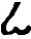
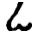

矛尘兄：
十九日来信，廿八日收到了，快极。广州我想未必比杭州热，二百八九十度罢。
季茀尚无信来，但看这名目[124]，似乎就无聊。夫浙江之不能容纳人才，由来久矣，现今在外面混混的人，那一个不是曾被本省赶出？我想，便是茭白[125]之流，也不会久的，将一批一批地挤出去，终于止留下旧日的地头蛇。我常叹新官僚不比旧官僚好，旧者如破落户，新者如暴发户，倘若我们去当听差，一定是破落户子弟容易侍候，若遇暴发户子弟，则贱相未脱而遽大摆其架子，其蠢臭何可向迩哉。夫汉人之为奴才，三百多年矣，一旦成为主人，自然有手足无措之概，茭白辈其标本也。
给丁山电[126]中之“才年”，盖影射耳，似我非我，可以欺丁山，而我亦不能抗议。此种计画，鼻盖与闻其事的，而对绍原故作恐慌者，以欺绍原，表明于中大内情，他丝毫不知道也。其问我何以不骂他者，亦非真希望我骂，不过示人以不怕耳，外强中干者也。无人骂之，尚且要失眠，而况有人骂之乎？我未曾骂，尚且念念于我之骂，而况我竟骂之乎？骂是我总要骂的，但当与骂吧儿狗之方法不同。至于写入小说，他似乎还不配，因为非大经艺术化，则小说中有此辈一人，即十分可厌也。你要知道

[127]的小玩艺，是很容易的。只要看明末清初苏州一带地方人的互相标榜和攻讦的著作就好了。况且以“才”署名，亦大可笑，我给别人的信，从未有自称为“才”者。蠢才乎，天才乎，杀才乎，奴才乎？其实我函电署名，非“树”则“迅”，傅与鼻是知道的。
吧儿跑到南京了，消息如别纸，今附上。[128]
《游仙窟》我以为可以如此印：这一次，就照改了付印。至于借得影本[129]后，还可以连注再印一回，或排或影（石印），全是旧式，那时候，则作札记一篇附之。至于书头上附印无聊之校勘如《何典》[130]者，太“小家子”相，万不可学者也。
译稿之处置，前函已奉告，但如他们不要或尚未送去，则交小峰亦可。但，这一篇，于周刊是不相宜的，我选择材料时，有点区别，所以《北新》如可免登，则以不登为宜。而我也可以从别方面捞几个零钱用。
小峰和春台之战，究竟是如何的内情，我至今还不了然；即伏园与北新之关系，我也不了然。我想，小and[131]春之间，当尚有一层中间之隔膜兼刺戟品；不然，不至于如此。我以为这很可惜，然而已经无可补救了。至于春台之出而为叭儿辈效力[132]，我也觉得不大好，何至于有深仇重怨到这样呢？
北京我本想去，但有一件事，使我迟疑。我的一个旧学生[133]，新近逃到南京了，因为替马二[134]在北京办报，其把柄为张鄠[135]所得。他筹办时，对我并不声明给谁办的，但要我一篇文章[136]，登第一期，而且必待此文到后才出版。敝文刚到，他便逃了。因此，我很疑心，他对于马二，不会说这报是我主持的么？倘如此，则我往北京，也不免有请进“优待室”之虑，所以须待到沪后，打听清楚才行。而西三条屋中，似乎已经增添了人，如“大太太”的兄弟之类，我回去，亦无处可住也。至于赴杭与否，那时再看。
倘至九月而现状不变，我以为绍原不如仍到此地来，以装傻混饭；在浙与宁，吃饭必更费力也，但我觉得到九月时，情形如何，是一问题。南京也有人来叫我去编什么期刊，我已谢绝了。前天，离敝寓不远，市党部后门炸了一个炸弹，但我却连声音也无所闻，直至今天看香港报才知道的。
迅 上 七，二八，夜
斐君兄均此不另。
陈西滢张奚若[137]也来此地活动，前天我们在丁惟汾[138]先生处看见，丁先生要我将他们领到胡汉民[139]处，我说有事，便跑出来了，出来告诉□□，于是□□在《市民日报》大骂驱逐投机分子陈西滢，倒也有趣，现在不知道他们活动的怎样。
七月七日发
吧儿狗也终于“择主而事”了。
注 释
[124] 名目 指当时浙江省民政厅聘许寿裳担任“视察”一职。
[125] 茭白 指蒋梦麟（1886—1964），浙江余姚人。留学美国，曾任北京大学教授及代理校长，当时为浙江省教育厅首任厅长。按“蒋”字本义为茭白，故这里代指蒋梦麟。
[126] 给丁山电 当时傅斯年以“才年”署名致电丁山，促其速来中山大学。丁山，即丁丁山。
[127]

鼻的形状，代指顾颉刚。[128] 即附于此信之末的荆有麟来信摘录。其中两处缺字为原件残损。
[129] 影本 指日本醍醐寺藏本的影印本。
[130] 《何典》 一部运用俗谚写成的、带有讽刺而流于油滑的章回体小说，共十回，清光绪四年（1878）上海申报馆出版。编著者“过路人”原名张南庄，清代上海人；评者“缠夹二先生”原名陈得仁，清代长洲（今江苏吴县）人。1926年6月，刘复（半农）将此书标点重印，鲁迅曾为作题记（后收入《集外集拾遗》）。
[131] and 英语：和、与的意思。
[132] 春台为叭儿辈效力 指孙福熙为陈学昭的作品《寸草心》画封面及交新月书店出版一事。
[133] 指荆有麟。
[134] 马二 指冯玉祥。
[135] 张鬍 指张作霖（1875—1928），字雨亭，辽宁海城人，奉系军阀首领。1924年起把持北洋政府，当时他的势力已经完全控制北京。
[136] 我一篇文章 疑指《略论中国人的脸》。
[137] 张奚若（1889—1973） 陕西朝邑（今大荔）人。曾留学美国，归国后任清华大学教授等职，现代评论派成员之一。
[138] 丁惟汾（1874—1954） 山东日照人。早年参加同盟会，曾任国民党中央执行委员兼青年部长、中山大学委员会委员等职，后任国民党中央政治会议委员。
[139] 胡汉民（1879—1936） 字展堂，广东番禺人。早年参加同盟会，曾任革命政府广东省长、代理大元帅，为国民党粤派领导人。后任国民党中央政治会议主席等职。